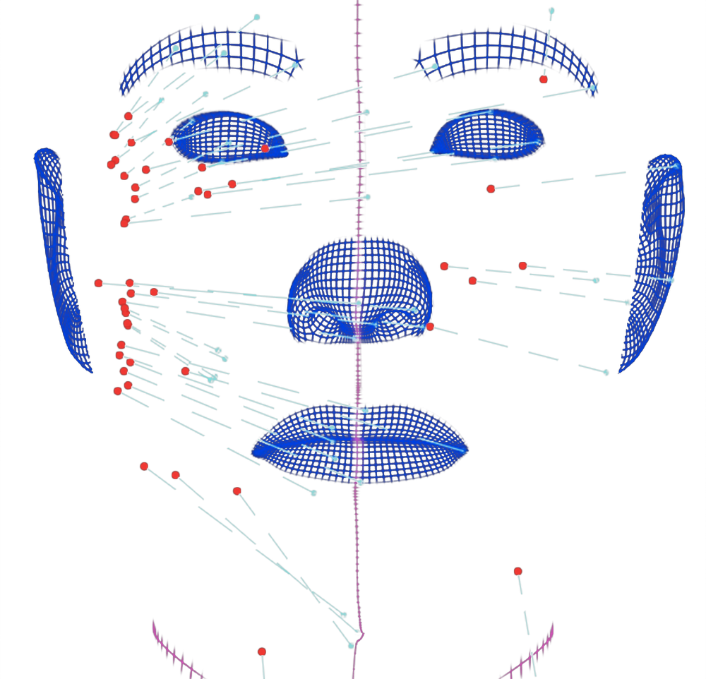

economic decision-making
2021, thought experiment
As the main interest of my bachelor's thesis was to find out under which circumstances people switch from the car or public transport to ridepooling I also dealt with the following cognition: Research in economics often relates to the question: how and why do individuals decide the way they do? Modelling and simplifying decisions is extremely difficult. The question arises whether individuals always decide according to financial, temporal or so-called 'utility-maximizing' principles? Let's play a game!
